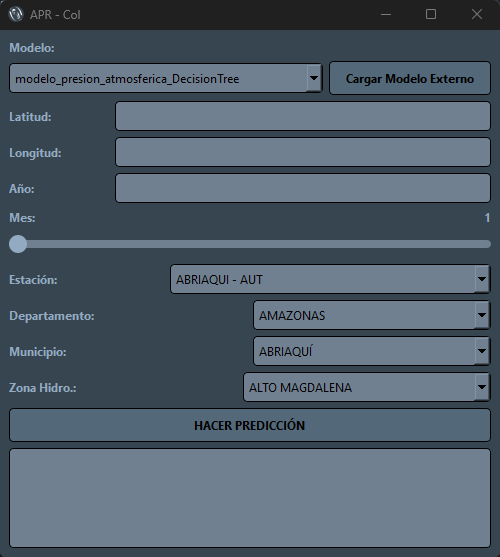
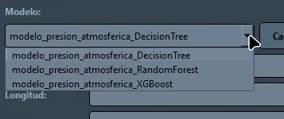
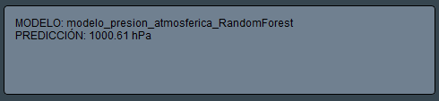
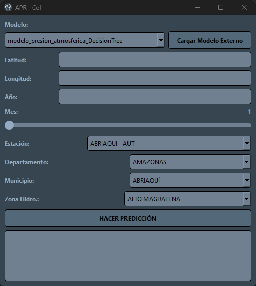
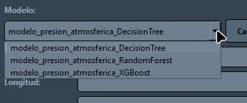
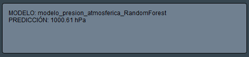

UI amigable y fácil de usar
Seleccion de multiples modelos
Predicciones precisas e inmediatas
Atmospheric Pressure Regression - Colombia
UI amigable y fácil de usar
Seleccion de multiples modelos
Predicciones precisas e inmediatas
